Truck Tracker
自社の配送部門の配達記録を管理するWebアプリ。ドライバーがスマホで打刻し、管理者がPCで状況確認・集計する。
1. 業務の流れ（概要図）
誰が・いつ・どこで・何をするかを時間の流れに沿って並べた図。①〜⑥の順に進み、ドライバーの操作はその場でデータに記録され、管理者の画面に反映される。
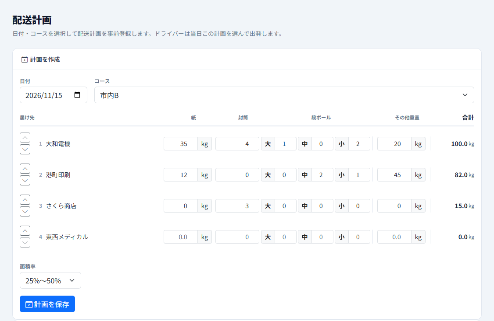
配達先ごとの重量・面積率を入力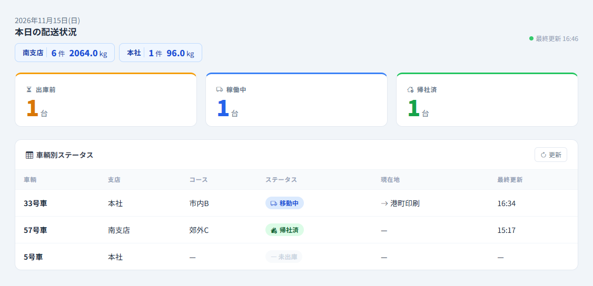
どの車輌がどこへ向かっているか自動表示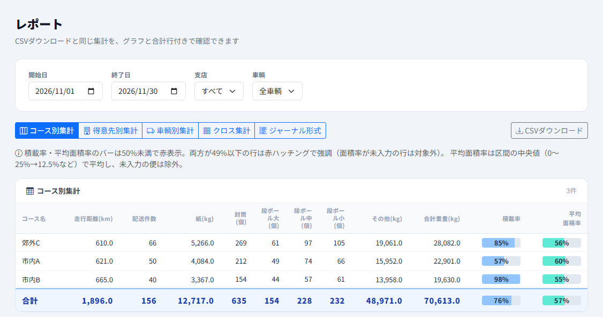
誤りを直し、積載率などを集計してCSV出力当日の計画
車輌を割り当て
時刻・重量を記録
帰社時刻・ODO
販売管理と結合
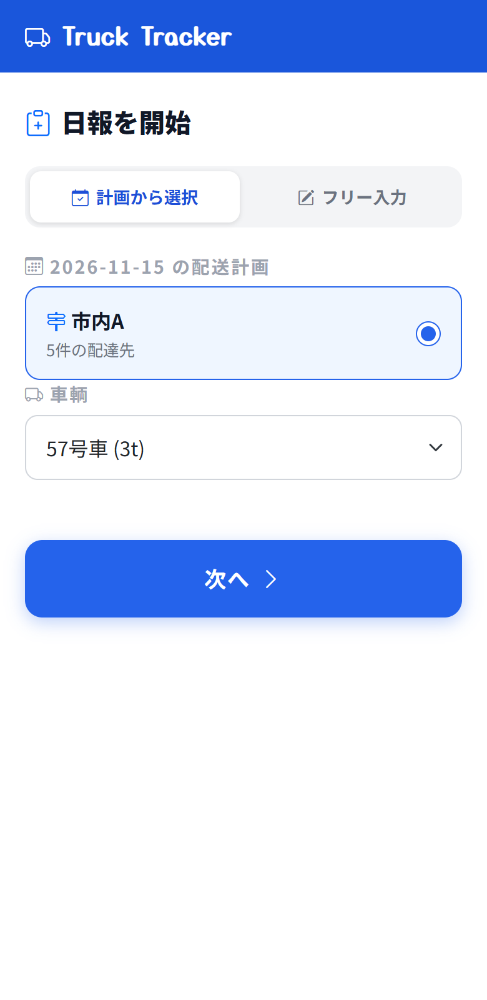
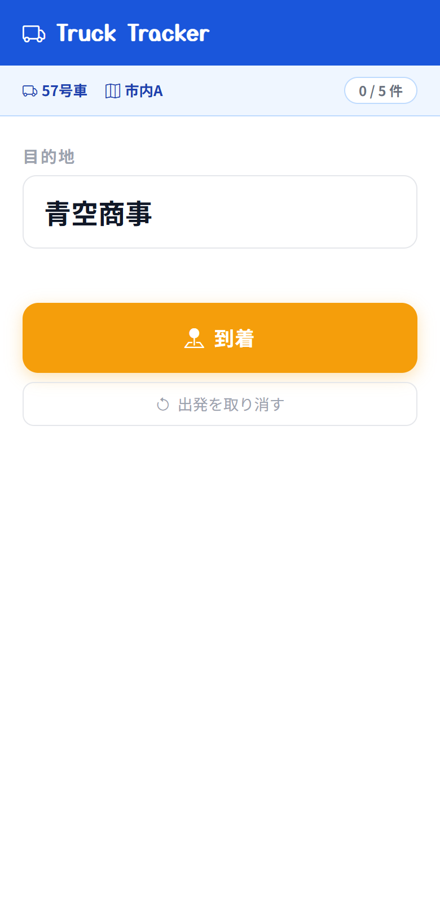
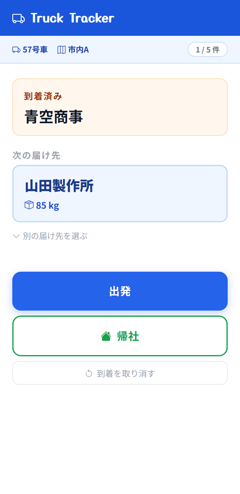
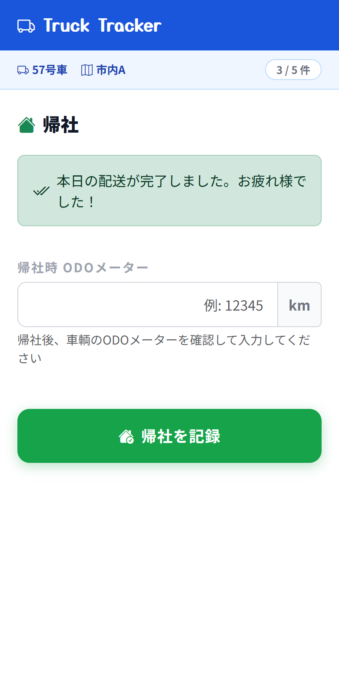
※ 画面写真はすべて、実際の画面にダミーのデータ（架空の得意先名・数値）を入れて撮影したもの。
2. 動作環境と相関図
どこで・どの機器から・どのサービスにつながって動いているか。アプリはブラウザだけで動き、Truck Tracker 用のサーバーを社内に置く必要はない。
admin.html
状況確認・配送計画・日報編集・レポート取得・結合
ホスティング
Realtime：変更を即時通知
index.html（携帯回線）
出発・到着・帰社を打刻データ読み書き
＋ 即時通知
取得（将来）
＋ 状態の復元
| 場所・サービス | 役割 | 補足 |
|---|---|---|
| 社内サーバ | 販売管理システムが稼働 | Truck Tracker とは直接つながらない |
| 社内PC・タブレット | 管理者画面（admin.html）を開く | Chrome / Edge などのブラウザ。ソフトのインストール不要 |
| Analyst（将来） | Truck Tracker の配送データと販売管理データを結合して分析 | 社内サーバとやり取りするのは Analyst のみ（PC・タブレットとはやり取りしない）。配送データは Supabase から取得し、得意先コードで結合して利益を測定 |
| 外出先のスマホ | ドライバー画面（index.html）を開く | 携帯回線でつながる場所ならどこでも可。ブラウザを閉じても進行中の日報を覚えていて、開き直すとDBの状態から画面を復元 |
| Netlify | アプリの画面ファイルを配信 | サーバー側の処理はなし（静的ホスティング） |
| Supabase | データの保存と、変更の即時通知 | PC とスマホはブラウザから直接接続。認証なし（anon key のみ） |
| CDN（jsDelivr） | Bootstrap・Chart.js などの部品を配信 | 画面を開くときに読み込み |
3. ドライバー画面（index.html）
出発・到着などのアクションの前に、スマホで打刻する画面。アクションごとにDBを更新するため、PCからリアルタイムに追える。
実際の画面（計画モードの例）
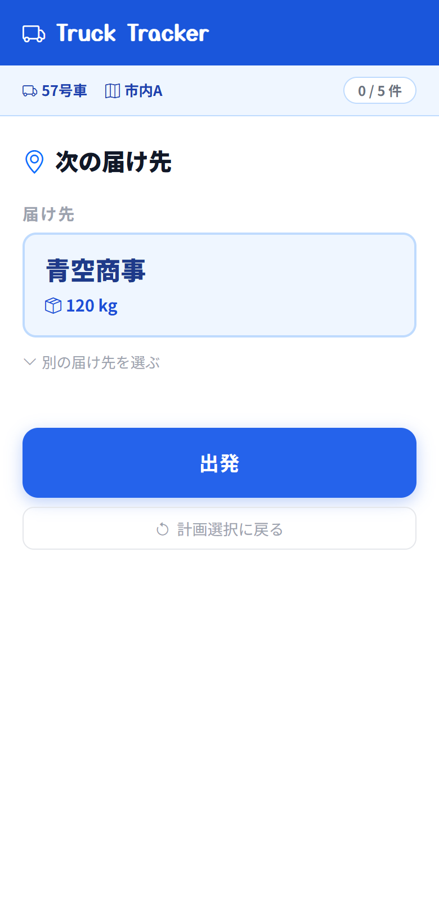
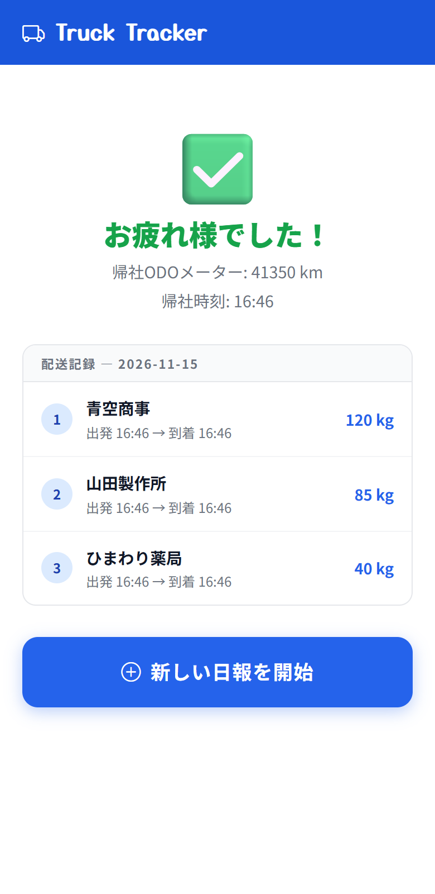
画面フロー
| 画面 | 操作・入力 |
|---|---|
| 選択 | 「計画」タブ／「フリー」タブから日報を開始（下記） |
| 出発前 | 行き先を選び「出発」。出庫ODOは同車輌の前回帰社ODOを自動セット |
| 移動中 | 目的地・出発時刻・経過タイマーを表示 →「到着」 |
| 到着後 | 配達重量などを入力。次の配達先へ「出発」、または「帰社へ」（途中帰社も可） |
| 帰社 | 帰社ODOを入力 →「帰社を記録」（帰社時刻も記録）。この値が次回出庫時のデフォルトになる |
| 完了 | 配送サマリーを表示 →「新しい日報を開始」 |
2つの開始モード
管理者が事前登録した当日の計画（planned）を選び、車輌を選んで出発。
- 次の届け先は「重量登録済み」を優先して自動セット
- 「別の届け先を選ぶ」で順番を変更可。スキップなし（全件配達が前提）
- 件数表示は重量が入力された配達先のみカウント
計画なしで、車輌・日付・コースをその場で選んで開始。
- 日付の曜日に運行するコースだけを自動で絞り込み
- 配達先はコース内からプルダウンで毎回選択（完了済みは除外）
中断・取り消し・復元
↩︎ Undo
ひとつ前の打刻を取り消し、1つ前の状態に戻る（出発→出発前、到着→移動中 など）。
🚫 Abort
それまでの操作をすべて取り消し、出発していないことにする。reports.status = 'aborted' で選択画面へ。
🔄 状態復元
出発〜到着が1時間以上かかることがあるため、進行中の日報IDを localStorage（tt_report_id）に保持。ブラウザ再起動後もDBのステータスから画面を復元。
4. 管理者画面（admin.html）
サイドメニューから各機能を切り替える、PC向けダッシュボード。
| メニュー | 内容 | 状態 |
|---|---|---|
| Dashboard | 当日の車輌の動きをリアルタイム表示 | 実装済み |
| 配送計画 | 日付・コースごとに配達先の重量を事前登録 | 実装済み |
| 日報編集 | 日報と配達記録の手修正 | 実装済み |
| レポート | 期間集計・グラフ・クロス集計・CSV出力 | 実装済み |
| シミュレーション | 配送計画のシミュレーション | 実装中 |
Dashboard — リアルタイム車輌確認
- 上部に3枚のカード：出庫前 ／ 稼働中 ／ 帰社済（台数）
- 車輌別ステータス表：コース、現在の状態（出庫前／移動中／到着済み／帰社済）、行き先、最終アクション時刻、帰社時刻
- Supabase Realtime で
stop_records/reportsの変更を WebSocket で受信し、手動更新なしで自動反映
配送計画 — 事前登録
- 入力項目：紙(kg)・封筒(個)・段ボール大/中/小(個)・その他重量。封筒・段ボールは単位重量で換算して合計を表示
- 重量を入力した配達先だけが計画に含まれる（チェックボックスなし）。1件も入力がなければ保存不可
- 面積率は荷台の使用割合を4段階で選択（0〜25 / 25〜50 / 50〜75 / 75〜100%）
- 計画一覧に、重量登録済み件数・総重量・ステータス・車輌を表示。ドライバーは当日この計画を選んで出発
日報編集
- 日付（前日／翌日ボタン付き）・車輌・状態で絞り込み、日報一覧から1件を選んで編集
- 日報：日付・車輌・コース・状態（計画中／稼働中／完了／中断）・帰社ODO・帰社時刻・面積率
- 配達記録：各配達先の記録を編集し、行の追加も可能
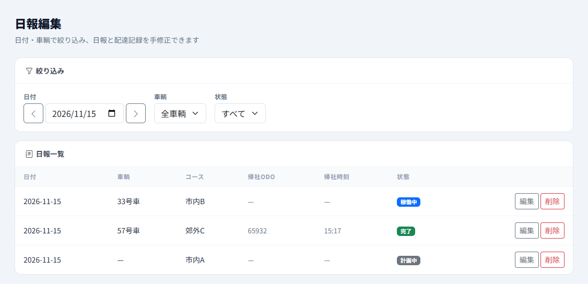
レポート — 集計と出力
日付範囲・支店・車輌で絞り込み、5つのタブで同じデータを切り替えて確認。表示中のタブと同じ内容をCSVでダウンロードできる。
| タブ | 内容 |
|---|---|
| コース別集計 | 走行距離・配送件数・紙／封筒／段ボール別の数量・その他・合計重量・積載率・平均面積率 |
| 得意先別集計 | 得意先ごとの回数・経費・総重量。販売管理の得意先コード付き。「実回数を使用する」で回数の数え方を切替 |
| 車輌別集計 | 車輌×日付ごとの便数・最大積載量・実績総重量・積載率・平均面積率 |
| クロス集計 | 行・列・指標を自由に選ぶピボット表。値の大きさに応じた色の濃淡つき |
| ジャーナル形式 | 日報・配達記録を1行ずつ並べた明細形式（販売管理データとの結合用） |
集計は 完了(completed)した日報のみ対象。配達件数は到着記録のある配達を数える。
集計に時間がかかる場合は、画面中央に「集計中...」を表示し、結果を薄くして操作を止める。
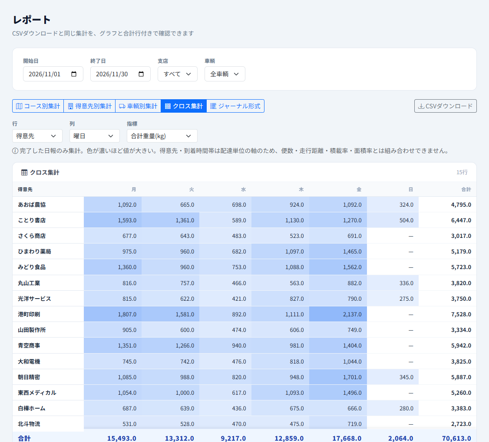
5. 主な指標の定義
| 指標 | 計算 |
|---|---|
| 合計重量 | その他重量 ＋ 紙 ＋ 封筒・段ボール数 × 各単位重量（単位重量はDBの設定値） |
| 積載率 | 合計重量 ÷ 最大積載量の合計（日報ごとの車輌最大積載量）× 100（四捨五入） |
| 平均面積率 | 面積率の各区間を中央値（0〜25% → 12.5% など）として平均。未入力の便は除外 |
| 走行距離 | 同じ車輌の「今回の帰社ODO − 前回の帰社ODO」（帰社時にだけODOを入力し、前回値が出庫ODOになる） |
| 強調表示 | 積載率・面積率が50%未満は赤。両方が49%以下の行は赤ハッチング（面積率が未入力の行は対象外） |
積載率の見え方： 82% 38%（赤）
クロス集計で選べる軸・指標
行・列
便単位月／曜日／日付／支店／車輌／コース
配達単位得意先／到着時間帯
指標
配達単位配送件数／合計重量／1件あたり重量
便単位便数／走行距離／積載率／平均面積率
便単位の指標は、配達単位の軸（得意先・到着時間帯）とは組み合わせられない。